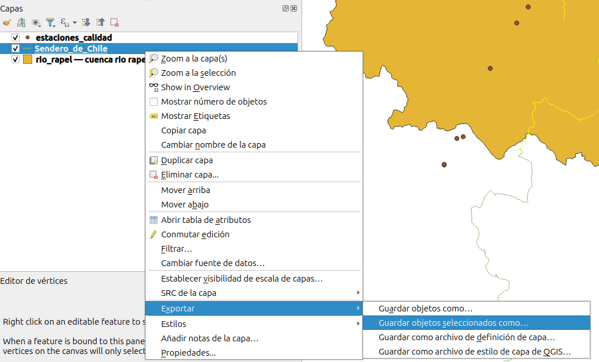

Taller 3: Tabla de Atributos
Introducción a la Tecnología de Información Geográfica (IMSE1014)
1 Introducción
Objetivos: - Trabajar con la tabla de atributos de datos vectoriales para crear y eliminar atributos. - Usar la tabla de atributos para modificar la simbología del mapa
Este laboratorio incluye las siguientes tareas:
Actividad 1:Modificar datos vectorialesActividad 2:Modificar la tabla de atributos.Actividad 3:Trabajar con la calculadora de campos
2 Datos
Para el taller utilizará modelos de datos geoespaciales de tipo vectorial y raster.
datos vectoriales: desde la IDE del Ministerio de Medio Ambiente (https://www.ide.cl/index.php/medio-ambiente) debe descargar las siguientes capas:cuencas BNA: delimitación de las cuencas hidrográficas de Chile. Descargar acáestaciones de calidad de aire: estaciones de monitoreo del Sistema de Información Nacional de Calidad de aire (SINCA) . Descargar acásendero de Chile: Conjunto de rutas que atraviesan el país, contribuyendo a la protección de la naturaleza, a través de la generación de un espacio de acceso público. Esta información se encuentra para todo el país. Descargar acá
datos raster:dem_chile: capa de elevaciones para todo Chile. Descargar acá
3 Actividad 1: Modificar datos vectoriales
El objetivo de esta actividad es seleccionar y trabajar sólo con las geometrias que se encuentran en la cuenca del río Rapel.
- Debe cargar las capas vectoriales de cuencas, estaciones de calidad de aire y sendero de Chile.
- Debe buscar en la tabla de atributos de la capa “cuencas_bna_centro” la entidad u objeto espacial que corresponde a “Río Rapel” y seleccionarla.
- Una vez seleccionada, debe guardar la entidad espacial seleccionada. La vamos a guardar con formato GeoPackage (.gpkg). Debe hacer clic con el boton derecho en la capa y luego seleccionar “Exportar” -Z “Exportar objetos seleccionados como…”
- Para crear el GeoPackage, debe cambiar el formato a “GeoPackage”, luego debe inciar el nombre de la capa, en este caso, le pondremos “cuenca rio rapel”. Hay que indicar en que carpeta y con que nombre se guardará el archivo. En este caso lo guardareos como “rapel.gpkg”
5. Ahora eliminamos la capa original de “cuencas_bna_centro”
- Debe quedar algo como se muestra en la siguiente imagen
Ahora debemos quedarnos con todas las geometrias que se encuentran dentro de la cuenca del río Rapel.
Vamos a seleccionar los objetos espaciales de la capa “sendero de Chile”, que se encuentran dentro de la cuenca del río Rapel. Por lo que vamos a hacer un proceso de “Selección por localización”
Debe ir al menu “Vectorial”->“Herramienta de Investigación”->“Selección por lozalización”
10. En el menu que se depliega, debe (1) seleccionar la capa desde la que se quieren seleccionar los objetos espaciales y (2) con respecto a que capa espacial. Por defecto QGIS realizará un proceso espacial de seleccón por intersección. Luego dar clic a (3) Aceptar.
- Ahora, deben estar seleccionados los objetos espaciales de la capa “sendero de chile” que se encuentran en la cuenca del río Rapel.
12. Ahora, de la misma forma como se guardó la cuenca del río Rapel, realizamos el proceso de guardar los objetos seleccionados.

- Lo vamos a guardar en el mismo archivo GeoPackage “rio_rapel.gpkg”, pero con el nombre de capa “sendero de chile”
- Eliminamos la capa “senderos de chile” original.
- Por lo que ahora tenemos sólo los tramos de senderos que se intersectan con el polígono de la cuenca del río Rapel.
- Por último, repetimos el proceso con los puntos de estaciones de calidad de aire.
17. Una vez seleccionadas las estaciones que se encuentran en la cuenca del río Rapel. La vamos a incorporar como capa adicional al archivo GeoPackage.
- Finalmente, deberiamos quedarnos con tres capas con objetos espaciales que se encuentran en la cuenca del río Rapel.
4 Actividad 2: Modificar tabla de atributos
Vamos a modificar los atributos de las tres capas vectoriales. Para lo que debemos trabajar con la tabla de atributos.
- Seleccionamos la capa “cuenca rio rapel”, haga clic con el boton derecho del mouse y seleccione abrir tabla de atributos.
- En la tabla de atributos, haga clic en el icono de “conmutar el modo edición”
Ahora la capa se encuentra en modo de edición y esp posible hacer modificaciones.
Vamos a eliminar el atributo “Area_km2”. Para eso haga clic en “elimina campo”, en la ventana que se despliega seleccione el campo “Area_km2”. De clic a “Aceptar”
5. Ahora debe agregar un nuevo campo para el nombre de la región. Debe hacer clic en “Campo nuevo” y luego le vamos a poner como nombre “Región”, como tipo “Texto” y que se pueda almacenar una cadena de texto de 50 carácteres.
- Ahora debe hacer doble clic con el boton izquierdo del mouse en el espacio para el campo “Region” en la geometría. Debe escribir “Libertador Bernardo O’Higgins”. Luegoo haga clic en el icono “guardar” y por último desactive el conmutador de edición.
- Ahora modifique la tabla de atributos de la capa “estaciones_calidad”. Abra la tabla de atributos, conmute edición y eliminar campo. Seleccione los campos que se indican en la siguiente figura.
El campo de “altura” que corresponde a la elevación no se encuentra con información para ninguno de los objetos. Por lo que vamos a completarlos.
Primero, debe cargar la capa raster de “dem_ohiggins”. La que corresponde a una capa raster dónde en cada pixel contiene un valor correspondiente a la elevación.
- Ahora, en la tabla de atributos de calida del agua debe seleccionar cada uno de los objetos y hacer un zoom al objeto seleccionado.
- Debe seleccionar la capa “dem_ohiggins” en el panel de capas y luego utilizar el “identificado de objetos” para que al hacer clic en la ubicación de la estación, se despliegue el valor de elevación que tiene.
- Luego, en la tabla de atributos de la capa “estaciones calidad” debe ir rellenando con los valores de elevaciones que corresponde a cada estación.
13. Por último, a la capa de “senderos de Chile”, vamos a eliminar los campos de acuerdo a como se muestra en la siguiente figura.
- Finalmente, guardamos los cambios y desactivamos el conmutador de edición.
5 Actividad 3: Trabajar con la calculadora de campos
El botón Calculadora de campo en la tabla de atributos le permite realizar cálculos sobre la base de valores de atributos existentes o funciones definidas, por ejemplo, para calcular la longitud o el área de características geométricas. Los resultados pueden usarse para actualizar un campo existente o escribirse en un campo nuevo (que puede ser virtual).
La calculadora de campo está disponible en cualquier capa que admita edición. Cuando hace clic en el icono de la calculadora de campo, se abre el cuadro de diálogo. Si la capa no está en modo de edición, se muestra una advertencia y el uso de la calculadora de campo hará que la capa se ponga en modo de edición antes de realizar el cálculo.
Basado en el cuadro de diálogo “Generador de expresiones”, el cuadro de diálogo de la calculadora de campos ofrece una interfaz completa para definir una expresión y aplicarla a un campo existente o recién creado. Para utilizar el cuadro de diálogo de la calculadora de campo, debe seleccionar si desea:
- Abra la tabla de atributos de la capa “sendero de Chile”
- Abra la “Calculadora de campos”. Ahora va a crear un nuevo atributo (campo) en dónde QGIS deberá calcular el perometro de cada segmento de linea.
- De la funciones que tiene la “Calculadora de campos” debe seleccionar
$length, que corresponde a la función que hace el cálculo del perímetro. Debe indicar un nombre para el nuevo campo, en este caso lo llamarémos “Perimetro”, debe elegir el tipo de dato que almacenara, en este caso deje el valor por defecto, entero de 32 bit. Luego debe hacer clic en “Aceptar”.
- Ahora al ver la “Tabla de Atributos”, puede apreciar que hay un nuevo campo, llamado “Perimetro”. En cada fila se calculó la longitud del segmento de linea. Debe guardar los cambios y desactivar el “conmutador de edición”.
- Ahora, abra la tabla de atributos de la capa “cuencas_bna_centro”. Active el conmutador de edición.
- Abra la calculadora de campos. Aplique la función
$area, la que corresponde a una función predefinida en QGIS que permite calcular el área de cada objeto espacial (entidad).
- Ahora la tabla de atributos debe tener un nuevo campo, llamado “Area”. En cada celda esta el valor calculado de área en metros, para cada entidad espacial.
- Ahora abra la “Tabla de Atributos” de la capa “estaciones_calidad”. Para cada entidad espacial (estación) vamos a calcular su coordenada.
- Abra la “Calculadora de campos”. Ahora para obtener la coordenada en X y en Y, debe utilizar las funciones
$xe$y. En el caso de la capa “estaciones_calidad” sus coordenadas se encuentran en grados decimales, por lo que el valor que vamos a obtener es en decimales. Por lo que el tipo de dato hay que definirlo como “real”.
- Finalmente, la tabla de atributos debe tener dos campos más, que corresponden a las coordenadas de cada unos de los objetos espaciales (estaciones).